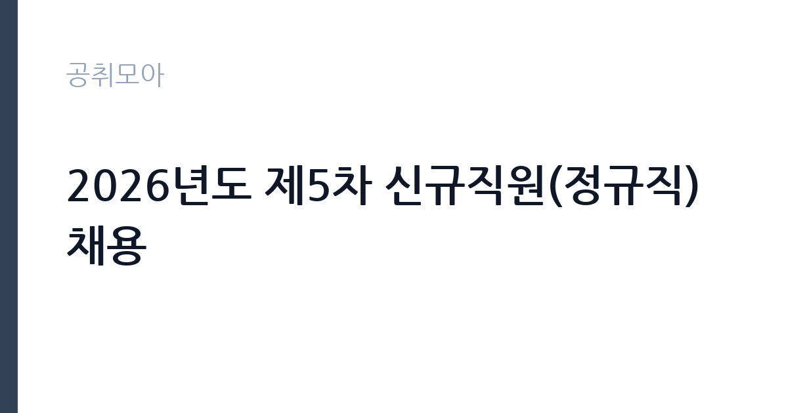

[공공기관] 2026년도 제5차 신규직원(정규직) 채용
한국해양교통안전공단 · 인천 · 마감 2026-11-10 (D-16) · 출처 잡알리오

한눈에 보는 모집 조건
| 기관 | 한국해양교통안전공단 |
|---|---|
| 공고명 | 2026년도 제5차 신규직원(정규직) 채용 |
| 고용형태 | 정규직 |
| 근무지 | 인천 |
| 게시일 | 2026-10-26 |
| 마감일 | 2026-11-10 (D-16) |
지원자격, 이렇게 읽으세요
- 공공기관 채용공시
- 세부 조건은 원문 공고문 확인
공통 요건은 연령과 성별 제한이 없다는 점입니다. 다만 행정직과 실무직은 임용예정일 기준 만 60세 미만, 해상직은 만 70세 미만이어야 합니다. 남성은 임용예정일 이전에 병역을 마쳤거나 면제되어야 하고, 임용예정일부터 정상 근무가 가능해야 합니다. 학력은 무관하거나 고졸로 표시되어 있어 전공보다 자격과 경력이 중요합니다. 해상직은 선장과 기관장 직위인 만큼 해당 해기사 면허와 승무 경력이 사실상의 관문입니다. 공단은 보훈대상자, 장애인, 지역인재, 고졸자 채용을 확대하는 사회 형평적 채용 원칙을 홈페이지에 밝히고 있으므로, 해당된다면 가점 증빙을 접수 시 함께 내야 합니다.
이 공고의 포인트
이 공고에서 가장 중요한 정보는 채용 분야별 경쟁률 차이입니다. 2026년 제3차 공고 실적을 보면 행정직 일반행정이 2명 선발에 응시 1,320명으로 최종 660대 1, 행정직 안전관리가 1명에 398대 1, 행정직 전산이 1명에 333대 1이었습니다. 반면 검사직 선체검사원은 7명 선발에 3.71대 1, 기관검사원은 5명에 5.60대 1, 운항관리자는 6명에 4.33대 1이었습니다. 같은 기관 안에서도 자격 요건이 있는 기술·해상 분야와 일반 행정 분야의 경쟁률이 두 자릿수 배로 벌어집니다. 두 번째 특징은 우대 항목이 많다는 점입니다. 취업지원대상자, 장애인, 이전지역인재, 고졸자, 저소득층, 북한이탈주민, 다문화가족, 자립준비청년에 공단근무경력과 한국사능력검정시험 1·2급까지 더해집니다.
전형은 어떻게 진행되나
1차 서류심사는 분야별로 배수가 다릅니다. 행정직은 채용분야별 150배수 이내, 해상직은 5순위까지, 실무직은 모집인원 1명이면 50배수, 2명이면 40배수 이내입니다. 2차 필기시험은 행정직이 NCS 직업공통능력 40%와 직무수행능력 60%이고, 실무직은 NCS 직업공통능력 100%입니다. 3차 면접시험은 직무능력 60%, 인성 40% 비중으로 분야별 채용예정인원을 선발합니다. 행정직의 경우 필기에서 직무수행능력 비중이 60%로 높아 전공 지식과 실무 이해도가 결정적입니다. 최종합격 후에는 결격사유 조회와 채용 신체검사가 이어지며, 해상직은 해기사 업무 정지처분 이력 등 추가 결격사유가 적용됩니다.
원문에서 확인한 전형 방식
<공통> ㅇ 연령*, 성별 제한 없음 * 행정직 및 실무직은 임용예정일 기준 만 60세 미만인 사람, 해상직은 임용예정일 기준 만 70세 미만인 사람 ㅇ 남자의 경우, 임용예정일 이전 병역을 필하였거나 면제된 사람 ㅇ 임용예정일부터 정상 근무가 가능한 사람 ㅇ 아래의 임용결격사유에 해당되지 않은 사람 * 상세내용 채용공고문 필히 참고
이런 분께 추천해요
- 해기사 면허와 승무 경력을 살려 해상직에 지원하려는 분
- NCS 직무수행능력에 자신 있고 해양·안전 분야를 준비해온 분
- 지역인재·고졸자·보훈대상자 등 우대 요건을 갖춘 분
지원 전 체크리스트
- 지원 분야의 서류 배수와 필기 비중을 공고문에서 확인했는가
- 해상직이라면 해기사 면허와 승무 경력 증빙을 준비했는가
- 우대 항목 증빙을 접수 시 첨부했는가(미제출 시 가점 불인정)
- 11월 10일 마감 전에 온라인 접수를 완료했는가
모집 일정과 제출 타이밍
공고는 10월 26일 등록되었고 접수는 11월 10일까지입니다. 서류심사, 필기시험, 면접시험이 순차로 진행되며 각 단계 결과는 개별 통보됩니다. 제3차 공고 사례를 보면 7월 22일 시작해 8월 7일 마감, 8월 25일 서류 결과, 9월 9일 필기 결과, 9월 28일 최종 발표로 약 두 달이 걸렸습니다. 이번에도 비슷한 일정이 예상되므로 필기 준비는 접수 직후 시작해야 합니다. 우대 증빙은 접수 단계에서 블라인드 처리해 제출해야 하며 나중에 보완할 수 없습니다.
직무 이해하기: 공공기관
한국해양교통안전공단은 선박검사와 여객선 안전운항관리, 해양교통안전관리, 해양환경사업을 수행하는 해양수산부 산하 공공기관입니다. 행정직 선박관리는 선박 검사 일정 관리와 검사 기록 유지, 민원 대응을 맡고, 안전관리는 여객선과 유선시설의 안전 점검, 사고 예방 활동을 담당합니다. 해상직 선장과 기관장은 공단이 운영하는 검사선이나 관리선에 승선해 항해와 기관 운전을 책임집니다. 실무직은 현장 지원과 시설 관리, 검사 보조 업무를 수행합니다. 근무지는 인천과 충남, 전북으로 표시되어 있지만 공단은 전국에 지사를 두고 있어 배치에 따라 근무지가 달라질 수 있습니다.
자기소개서 작성 팁
이 공단의 자기소개서는 지원 분야의 실무를 얼마나 알고 있는지 보여주는 데 집중해야 합니다. 행정직 안전관리라면 여객선 안전 점검이 어떤 항목으로 이뤄지는지, 선박관리라면 검사 주기와 절차를 어느 정도 아는지 드러내십시오. 해상직은 승선 경력과 항해 구역, 다뤄본 선박의 종류와 톤수를 구체적으로 적는 것이 가장 강한 소재입니다. 지원동기는 공단의 사업 가운데 하나를 골라 좁히십시오. 선박검사, 여객선 안전, 해양환경 가운데 본인의 경험과 맞닿는 지점을 한 문단으로 정리하고, 입사 후 어떤 업무를 맡고 싶은지로 마무리하면 좋습니다.
면접 준비 포인트
면접은 직무능력 60%, 인성 40% 비중으로 진행됩니다. 직무 질문은 지원 분야의 실제 업무 상황을 가정합니다. 검사 일정이 겹칠 때 우선순위를 어떻게 정할지, 여객선에서 안전 위반 사항을 발견했는데 선사가 반발할 때 어떻게 대응할지, 현장에서 사고가 나면 어떤 순서로 보고할지 같은 질문이 나옵니다. 인성 평가는 조직 적응과 공직 윤리를 봅니다. 이해충돌 상황에서 어떻게 판단하는지, 검사 대상 업체로부터 부탁을 받으면 어떻게 할지에 대한 답변을 준비하십시오. 공단이 강조하는 청렴과 안전 가치를 본인의 경험으로 뒷받침하면 좋습니다.
급여·근무조건 읽는 법
한국해양교통안전공단 정규직의 보수는 공단 보수규정에 따라 기본급과 각종 수당, 성과상여금으로 구성됩니다. 이번 공고는 본문에 급여 정보를 싣지 않았고 알리오에도 신입 평균 급여 항목으로만 연결되어 있어, 정확한 초임은 원문 공고문과 공단 보수규정을 확인해야 합니다. 참고할 수 있는 외부 자료로는 채용 플랫폼에 표시된 2026년 제3차 신규직원(정규직) 공고의 급여 표기가 연봉 4,178만원에서 4,550만원 범위였다는 점입니다. 이는 공단 공식 자료가 아니라 채용 플랫폼 입력값이므로 참고 수준으로만 보십시오. 공단은 알리오 경영공시에 직원 평균보수를 공개하고 있으니, 전체 평균보수와 신입 초임은 성격이 다르다는 점을 감안해 함께 확인하시기 바랍니다. 2026년 적용 최저임금은 시급 10,320원, 월 환산 2,156,880원입니다.
자주 묻는 질문
- 행정직과 실무직의 필기시험은 무엇이 다른가요?
행정직은 NCS 직업공통능력 40%와 직무수행능력 60%를 봅니다. 실무직은 NCS 직업공통능력 100%로 치러집니다. - 경쟁률이 낮은 분야는 어디인가요?
제3차 공고 실적 기준으로 자격 요건이 있는 검사직과 운항관리직이 3.7대 1에서 5.6대 1 수준이었고, 일반 행정직은 333대 1에서 660대 1까지 올랐습니다. 자격 요건 충족 여부가 경쟁률을 크게 가릅니다. - 우대 가점은 중복 적용되나요?
취업지원대상자부터 자립준비청년까지 8개 항목은 가장 유리한 하나만 인정되고, 공단근무경력과 한국사능력검정시험은 중복 적용됩니다. 증빙을 접수 시 제출해야 인정됩니다.
함께 보면 좋은 공고
[공공기관] 2026년도 10월 블라인드 공개채용 계약직 (보건직, 행정직, 원무직) 모집 공고 — 마감 2026-11-09[공공기관] 2026년도 10월 블라인드 공개채용 국비계약직(작업치료사) 모집 공고 — 마감 2026-11-09[공공기관] 한국토지주택공사 인천지역본부 기간제근로자(매입행정역, 매입기술역, 공사원가검토역) 채용공고 — 마감 2026-11-09출처: 잡알리오 공개정보를 바탕으로 공취모아가 정리한 안내글입니다. 모집 조건·일정은 변경될 수 있으니 지원 전 반드시 원문 공고문을 확인하세요. 본 글은 정보 제공용이며 합격을 보장하지 않습니다.